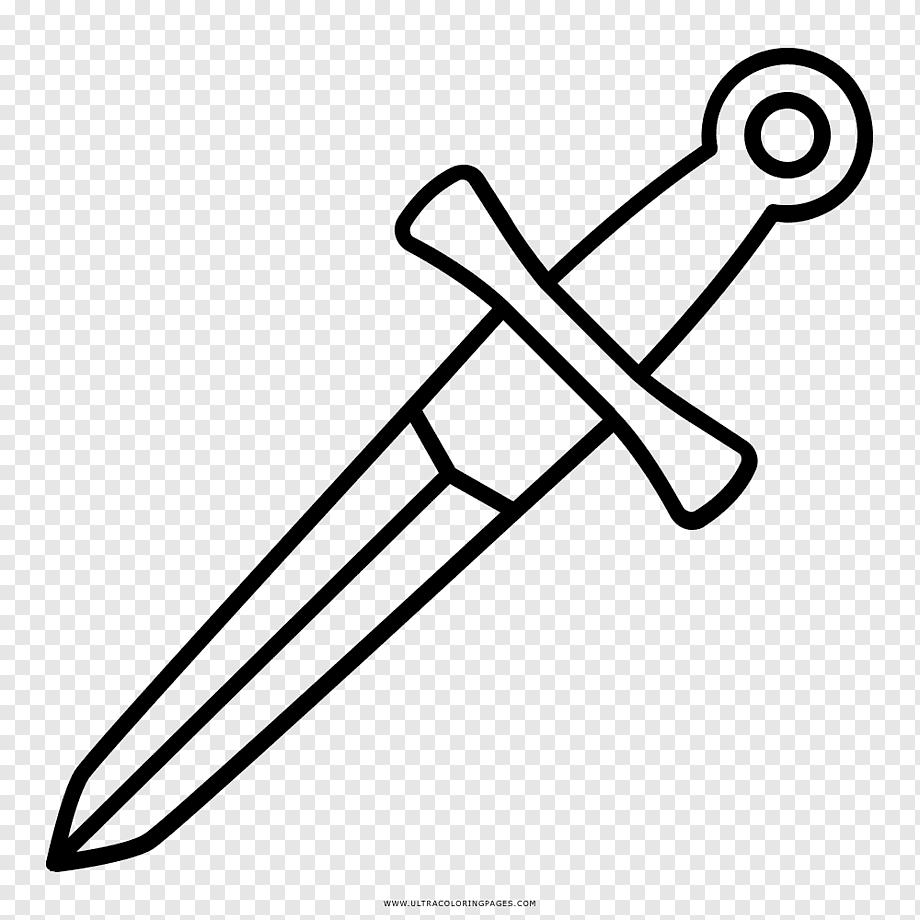

DAGA
programador en proceso

mi nombre es Gallardo Dario
Naci en La Rioja, Argentina, tengo 24 años. Estoy cursando 2do año de la carrera tecnicatura en programacion en la UTN,
antes de eso pase por varias carrea sin un gran recorrido en ellas, eso me ayuda a conocerme y poder encontrar lo que realmente me gusta, la programacion.
aparte de haber cursando varias carreras tambien pase por varios trabajos los cuales me aportaron experiencia en el mundo laboral.
Herramientas
- python
- HTML
- CSS
- JS
- PyQT
- PSint
contacto